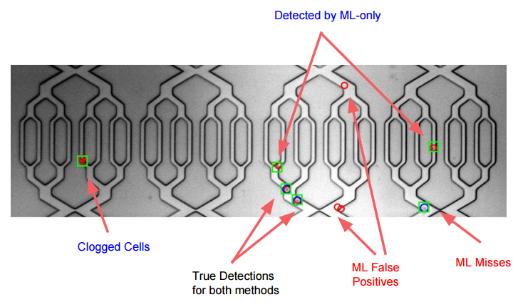
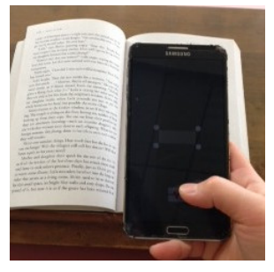
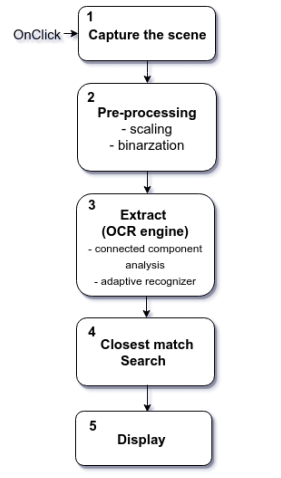
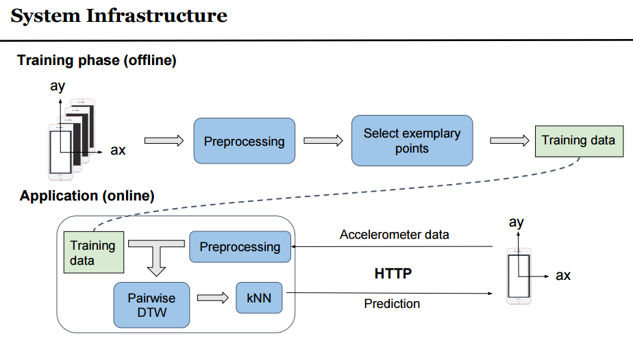

Generating Gaussian, Pictures, and Stories with Generative Adversarial Networks
Hayley Song*, Adam Yala*
paper (2016 Fall)
In this paper, we explore the framework of Adversarial Training as introduced in the original paper by Goodfellow et al.. Generative Aversarial Network (GAN) is a semi-supervised training method and has shown promising results in various tasks such as Image Generation, Transfer Learning, Imitation Learning and Text Generation. We aim to expose the issues and suceesses of GANs while experimenting through diverse generation tasks. Specifically, we work through generating a Gaussian distribution, images, and texts. For each experiement, we investigate the effects of parameters (e.g pre-training of the discriminator) on the convergence and the performance of the adversarial nets.
Automatic Cell Detection using HOG features and SVM
Nicha Apichitsopa*, Boying Meng*, Hayley Song*
paper, video, slides (2016 Fall)

The analysis of cell trajectories inside microchannels is a critical part of many microfluidic systems. This task requires automated cell detection and cell tracking algorithms in order to reliably extract cell positions over time. Such algorithms need be robust against shape deformation, variable illumination, and noises from sensors and cell movements. In this report, we prove the ability of our machine-learning detection algorithm based on the Histogram of Oriented Gradients (HOG) and Support Vector Machines (SVMs), and compare its performances to the classic image segmentation method. We also investiage different features extracted by various machine learning algorithms and discuss how they affect the performances of cell detection and tracking.
FreeFlow: Unintrusive Reading Device for Printed Texts
Hayley Song, Suvrit Sra
{kind=link}
 
FreeFlow is a software for the pen-style, hand-held device that allows a user to search for definitions by “clicking” on the printed text. It is the first end-to-end system that performs such functions with high accuracy (95%) under variable illumination and motion blur from hand movements. It is composed of the four main modules: 1) capture, 2) preprocessing, 3) recogtnition and 4) dictionary search. In this paper, we discuss the details of our system and its performances under various real-world settings.
3D Air Gesture Recognizer using Dynamic Time Warping and KNN
Hayley Song*, Chongyuan Xiang*
poster (MIT CSAIL, 2016)
code and dataset

In this project, we use the Dynamic Time Warping method and the Neearest Neighbor to design a recognizer for 3D alphabet gestures drawn in the air. We collected the air gesture data from 11 users, and designed the features using speed, acceleration and rotation in the three dimensional space.
(*: Equal contribution)